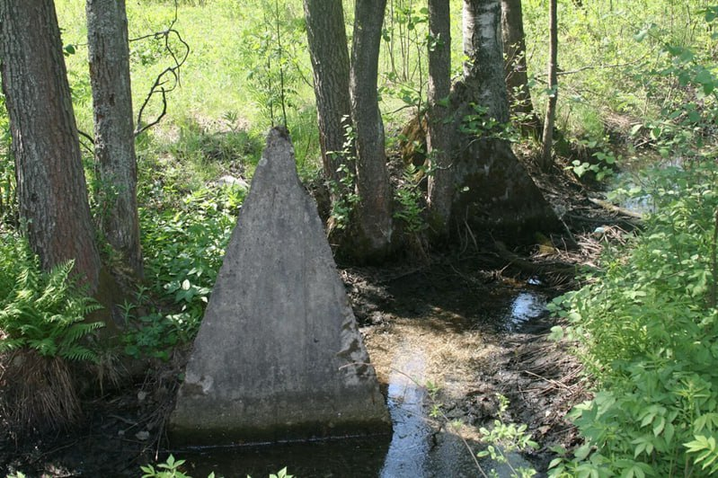
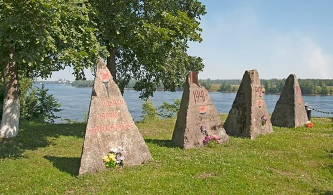

Противотанковые надолбы»
Входят в перечень объектов культурного наследия регионального значения. Противотанковые надолбы – более 90 штук были установлены на рубеже обороны советских войск в 1941-1942 годах по левую сторону от дороги из Дубровки. Надолбы должны были преградить путь фашистским танкам в случае возможного прорыва
 